HoLEP ile Lazerle Prostat Tedavisi Nedir, Nasıl Yapılır?
İyi huylu prostat büyümesinde altın standart olan HoLEP yönteminin geleneksel cerrahilere göre farkları ve avantajları.
Yazıyı Oku

Üroloji Cerrahi Deneyimi
ÜAK Onaylı Akademik Unvan
Başarılı Cerrahi Operasyon
Kapalı ve Lazerli Girişimler
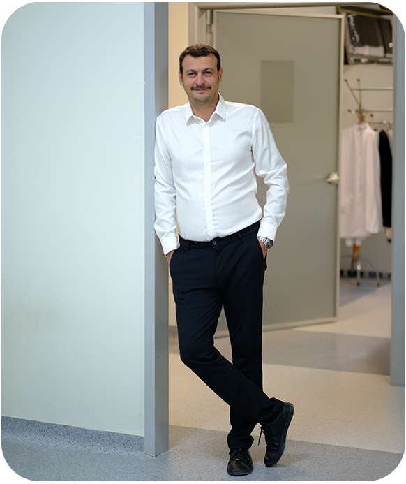
Merhaba, ben Doç. Dr. Umut Ünal. Adana doğumluyum ve 2011 yılından bu yana üroloji alanında hastalarıma aralıksız hizmet vermekteyim.
Mesleki hayatım boyunca bilimsel yaklaşımı, etik hekimlik anlayışını ve hasta memnuniyetini daima ön planda tuttum. Özellikle üroonkoloji (ürolojik kanserler), robotik cerrahi, laparoskopik cerrahi, endoüroloji, böbrek taşı hastalıkları, HoLEP prostat cerrahisi ve erkek infertilitesi ilgi alanlarım arasında yer almaktadır. Minimal invaziv cerrahi yöntemlerle hastalarımın konforlu bir iyileşme süreci geçirmesini sağlıyorum.
Uluslararası standartlarda, en son teknoloji cihazlar ve minimal invaziv cerrahi yöntemlerle sunduğumuz ürolojik tedaviler.
Lazerle kapalı böbrek taşı ameliyatları (RIRS, URS, Perkütan Nefrolitotomi), kum dökme ve ağrısız taş kırma çözümleri.
Detaylı Bilgi
Böbrek kanseri (nefrektomi), prostat kanseri, mesane ve testis tümörlerinin laparoskopik kapalı cerrahi tedavisi.
Detaylı Bilgi
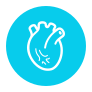
Hipospadias (peygamber sünneti), inmemiş testis (kriptorşidizm), vezikoüreteral reflü ve UPJ darlığı cerrahisi.
Detaylı Bilgi
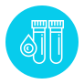
İyi huylu prostat büyümesinde (BPH) altın standart. Kanamasız, hızlı iyileşme ve tekrarlamayan kalıcı lazer tedavisi.
Detaylı Bilgi
Sertleşme problemi (erektil disfonksiyon), Peyronie hastalığı ve kronik prostatitte ameliyatsız, iğnesiz ve ağrısız şok dalga seansları.
Detaylı Bilgi
Mikrocerrahi teknikle testis damarlarının bağlanması. Sperm sayısını ve kalitesini artıran, nüks riski en düşük altın standart operasyon.
Detaylı Bilgi
Küçük deliklerden girilerek yüksek çözünürlüklü kameralarla gerçekleştirilen kapalı böbrek, mesane ve prostat cerrahileri.
Kliniğimizde teşhis, takip ve modern tedavi protokolleri uygulanan ürolojik hastalıklar.
Doğrulanmış hasta değerlendirmeleri ve başarılı cerrahi operasyon sonrası deneyimler.
Her hastamızın durumu özel olarak değerlendirilir, en güncel minimal invaziv cerrahi yöntemlerle en hızlı ve konforlu iyileşme hedeflenir.
Üniversitelerarası Kurul Doçentlik unvanı, şehir hastanesinde yıllarca başasistanlık ve binlerce vaka deneyimi.
HoLEP lazer prostat, laparoskopik kapalı kanser operasyonları ve ağrısız ESWT seansları.
Tanı anından taburculuk ve kontrole kadar hastasını dinleyen, açıklayan ve takip eden hekimlik felsefesi.
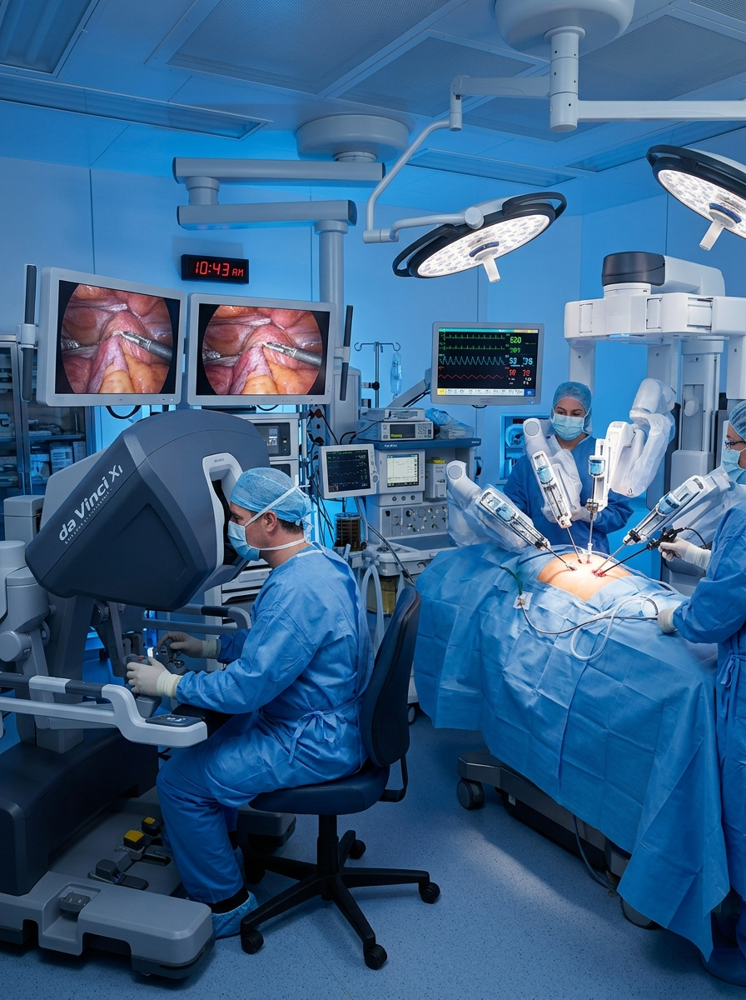
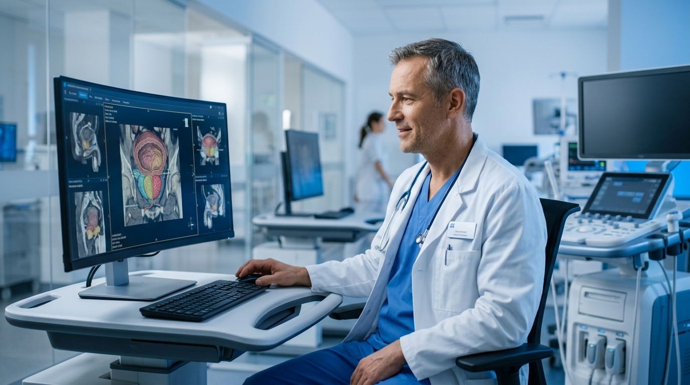
İyi huylu prostat büyümesinde altın standart olan HoLEP yönteminin geleneksel cerrahilere göre farkları ve avantajları.
Yazıyı Oku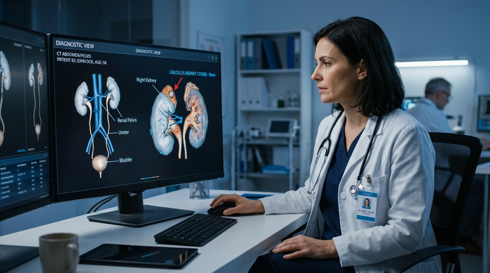
Şiddetli yan ağrısı ve idrarda kanla seyreden böbrek taşlarında kesiksiz lazerle taş kırma operasyonları.
Yazıyı Oku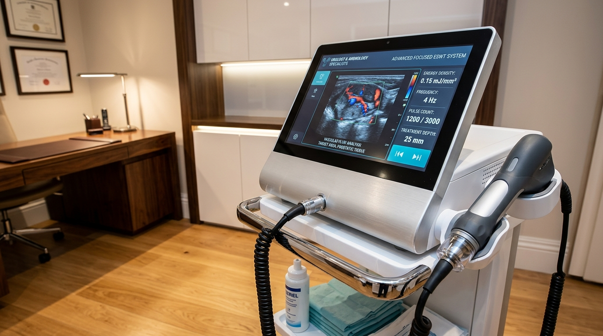
Düşük yoğunluklu ses dalgaları ile damar yenilenmesi sağlayarak erektil disfonksiyonda kalıcı iyileşme.
Yazıyı Oku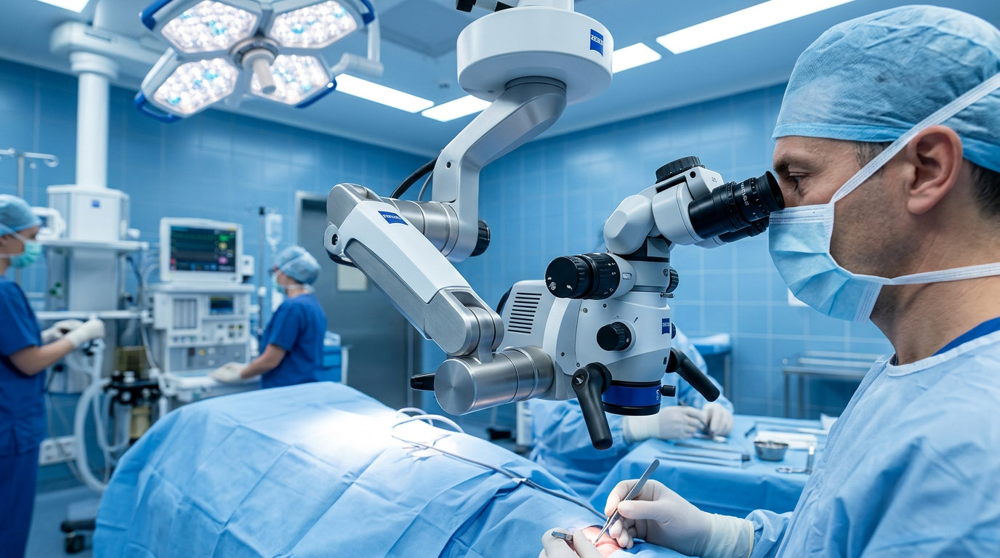
Erkek kısırlığında sperm kalitesini artıran mikroskop altında altın standart mikrocerrahi operasyon.
Yazıyı Oku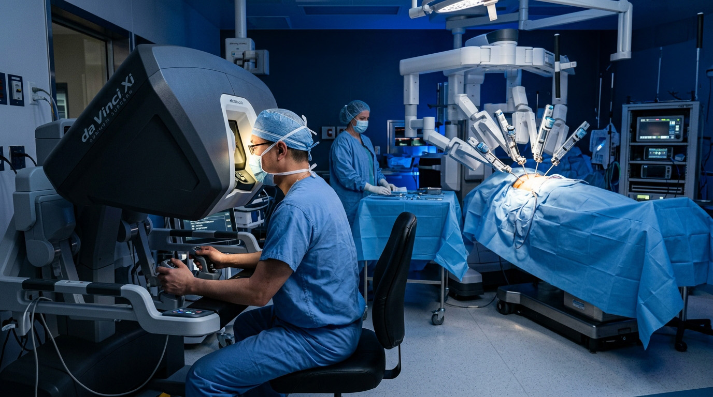
Prostat, böbrek ve mesane tümörlerinde kapalı cerrahinin onkolojik başarısı ve hızlı iyileşme avantajı.
Yazıyı Oku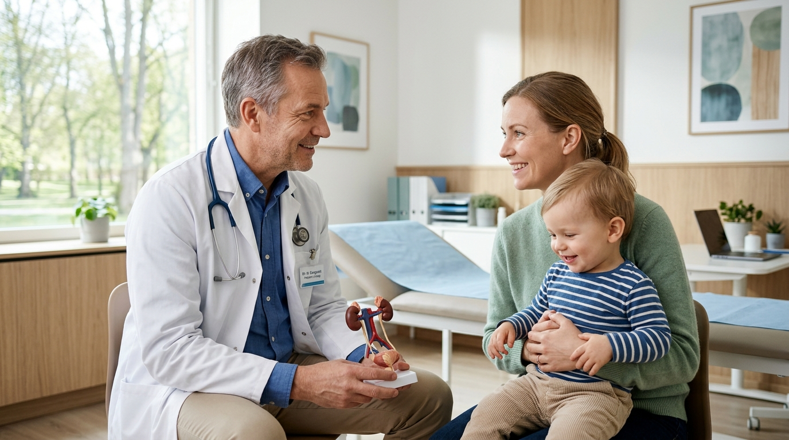
Bebeklik ve çocukluk dönemi ürolojik anomalilerinde tek seanslık cerrahi onarım ve erken teşhis rehberi.
Yazıyı Oku